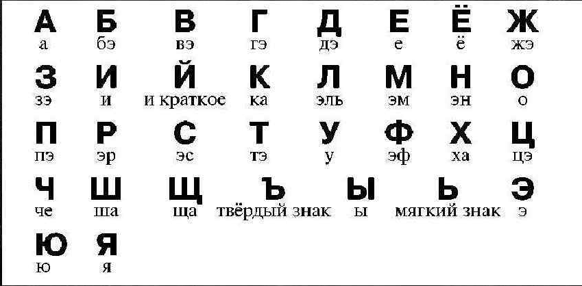
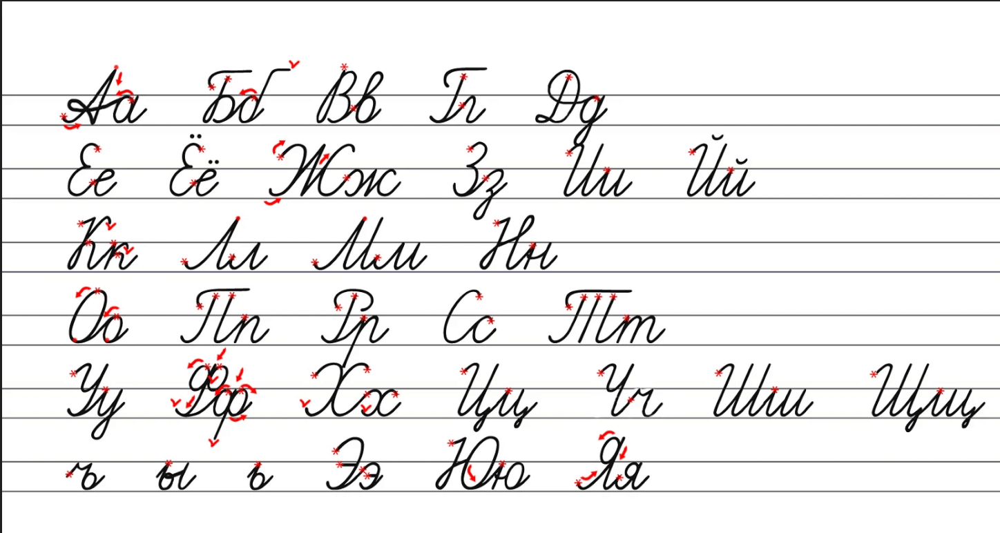

Полезная информация
- Задания на каникулы с 14 по 20 февраля 2022 (рекомендованные)Скачать
- Правила по математике для начальной школыСкачать
- Правила по математике 1 классСкачать
- Правила-памятка по русскому языку 1 классСкачать
- Сборник для развития техники чтения 1 классСкачать
- Советы психологаСкачать
Русский алфавит
Алфавит — это буквы, расположенные по порядку.


Вот советы, как сделать каникулы интересными для себя и детей
- Для детей главное, чтобы дни были разнообразными. Напишите план: горка, снег, гулянья, гости, кино, музеи, совместное чтение книг.
- Как можно больше времени проводите на свежем воздухе..Гуляйте в парке, во дворе, ездите в лесопарки, берите коньки — и марш на каток, катайтесь на лыжах. Постарайтесь весь световой день провести на улице. Ведь когда выйдете на работу, погулять уже не получится. И детям гулянье необходимо!
- Сделайте то, о чём давно мечтали, но до чего никак не дойдут руки. Поставьте домашний спектакль, съездите в гости к друзьям, которые далеко живут, обязательно навестите бабушек, дедушек, сходите в театр. Главное — всей семьёй.
- Устройте домашний детский праздник. Соберите друзей, соседей, отрепетируйте представление, нарядитесь в костюмы, поиграйте в сказку, приготовьте простое угощение на разноцветных бумажных тарелочках, чтобы не мыть посуду.
- Организуйте праздник во дворе. Так вы и поиграете, и погуляете. Нарядите ёлку, поиграйте в ручеек. Поверьте, это понравится и детям, и взрослым. Заодно и соседей своих поближе узнаете.
- Разнообразьте катание с горки — устройте там праздник с конкурсами: кто дальше всех уедет, кто быстрее и т. д. Куртки можно украсить ёлочным дождиком.
- Идите в зимний поход. В парк или в лес. Закопайте под елками сюрпризы, маленькие подарочки. Нарисуйте карту или план. Под ёлкой найдите письмо Деда Мороза, в котором он пишет: «К сожалению, я до тебя не доехал, сани мои сломались, пришлось закопать твой подарок под ёлочкой. Вот карта, по ней ты сможешь свой подарок найти». Пусть ребёнок по карте ищет нужные ёлки и обнаруживает подарки. Поверьте, дети от таких поисков сокровищ будут в восторге!
- Гуляя в лесу, давайте ребёнку задания: повесить кормушку, насыпать корм в уже висящие кормушки, зарисовать все деревья, которые он встречает.
- Сходите в музей. Школьнику будет интересно в музее краеведческом, зоологическом.
- Устройте день рождественских подарков. За пару дней до праздника организуйте дома «волшебную мастерскую». Купите книжку с поделками и мастерите вместе с детьми! Делайте витражи, рисуйте картины на дереве, на холсте, вырезайте фигурки и клейте аппликации.
- Вместе с ребёнком устройте акцию — разберите детские вещи (можно и свои тоже), соберите хорошую одежду, из которой малыш вырос, игрушки и отправьте всё это нуждающимся детям в детские дома или в социальные центры. Ребёнку очень полезно сделать такое доброе дело.
- Не смотрите телевизор безостановочно! Заранее отметьте в программе те передачи и фильмы, которые вам понравятся, посмотрите их вместе с детьми, обсудите.
- Устройте «день вкуснятины». Можно, например, освободить в этот день маму от кухни, а папе с детьми наготовить простых вкусностей. И все вместе пеките печенье, позвольте детям измазаться в муке, в тесте, налепить неровных фигурок. Главное — самостоятельно!
- Но, конечно же, не следует забывать о ХОРОШЕМ ЧТЕНИИ КНИГ! Читайте ВМЕСТЕ, обсудите, напишите отзыв, нарисуйте рисунок. Читать можно любую книгу.
- А так же в форме игры повторяйте с детьми словарь по русскому языку, таблицу сложения.
- Во время каникул не забывайте про технику безопасности! Берегите своих детей! Напоминайте всё время про личную безопасность на дорогах, на улице, дома!!!
- За два-три дня до школы начинать вставать пораньше. Занятия начнутся 10 января!
САМОЕ ВАЖНОЕ: всё что кажется вам и детям интересным, фотографируйте. Ребята в классе покажут и расскажут на первом классном часе.
И помните, удачные каникулы — запланированные каникулы!
Рекомендовано для чтения на каникулах (1 класс 1 полугодие)
Русские народные сказки:
- Морозко
- Два Мороза
- Гуси-лебеди
- Лиса и заяц
- Маша и медведь
- Мужик и медведь
- По щучьему веленью
- Сестрица Алёнушка и братец Иванушка
- Лисичка со скалочкой
- Волк и лиса
Памятка учащимся на зимние каникулы
- Соблюдай правила дорожного движения. Знай, что зимняя дорога опасна.
- Помогай младшим и старшим. Без разрешения родителей не уходи далеко от дома, если нужно уйти — предупреди родителей.
- Осторожно пользуйся газовой плитой, электроприборами, не оставляй их без присмотра.
- Будь осторожен с фейерверками, пользуйся ими только со взрослыми. Не используй петарды — это опасно для твоего здоровья.
- Не засиживайся перед телевизором и компьютером. Читай книги, посещай кружки, самостоятельно занимайся дополнительно по школьным предметам (при необходимости).
- Больше гуляй на свежем воздухе. Встречайся с друзьями.
- Не общайся с незнакомыми людьми, не приглашай их в дом.
- Не трогай бесхозные сумки или коробки.
- Запрещается пребывание вблизи водоемов в период зимних каникул.
- Не разрешается пребывание на улице после 22.00 часа без сопровождения взрослых.
Правила школьной жизни
- Главное: старайся жить так, чтобы людям рядом с тобой было хорошо.
- Прежде, чем обратиться к человеку, улыбнись ему: ведь добрые отношения начинаются с улыбки.
- Научись радоваться не только своим успехам, но и успехам товарищей по классу.
- Никогда никому не завидуй и не ябедничай: ябеда озлобляет людей и разрушает их отношения.
- Старайся прийти на помощь товарищу, не жди пока тебя об этом попросят.
- Если тебе будет плохо, не спеши обвинять в этом других. Учись терпеть неприятности. Плохое скоро проходит.
- Дорожи школьной дружбой. Цени свой класс и свою школу.
- И еще о главном: относись к людям так, как ты хочешь, чтобы относились к тебе.
Развитие интереса к чтению у ребенка и формирование читательской состоятельности
- Ничего не делайте за ребенка из того, что он может и умеет делать сам.
- Воспитывайте интерес ребенка к чтению личным примером.
- Не заставляйте ребенка читать насильно, заинтересуйте его чтением, подбирая книги, которые могли бы чем-то его привлечь.
- Можно купить школьнику аудиокнигу по произведениям русских классиков, можно найти и показать достойный фильм, снятый по классике, а потом попросить прочитать книгу. Обсудите различия.
- Приучите ребенка значение любого незнакомого слова смотреть в словаре.
- Совместное чтение книг, пересказ прочитанного друг другу и невольно возникающий при этом обмен мнениями — естественный путь читательского общения в семье.
- Вспоминайте любимые книги своего детства, как бы разжигая аппетит к важным для каждого человека книгам. Пересматривайте книги собственной библиотеки с участием детей. О книгах любимых рассказывайте с восхищением.
- Поручите школьнику составить каталог домашних книг. Опыт показывает, что он может найти интересную для себя, копаясь в книгах.
- Проконтролируйте, чтобы в дорогу была взята интересная книга.
- Если юный читатель увлекся какой-либо темой, подкиньте ему нужную литературу. Позаботьтесь о том, чтобы в руки ребенка попадали действительно хорошие книги.
- Убедите школьника записаться в городскую библиотеку и посещать ее не реже двух раз в месяц. Учитель с удовольствием порекомендует интересные книги.